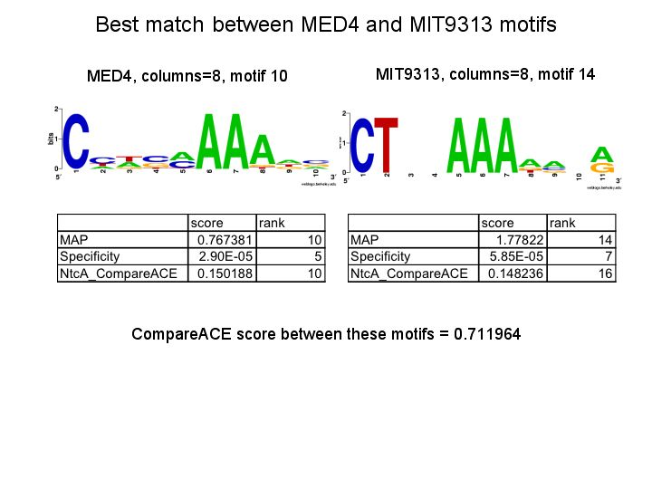
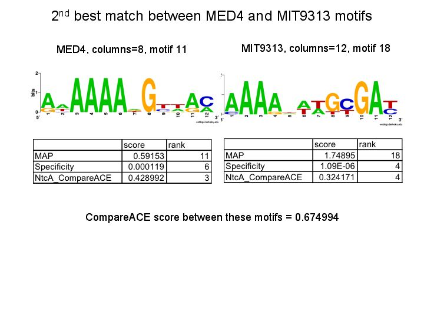
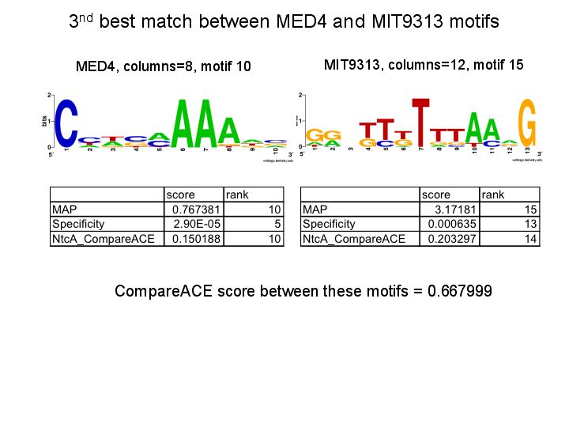

CompareACE was used to compare all MIT9313 and all MED4 motifs generated from all runs, in order to find motifs in common to both Prochlorococcus strains. The first motif shown has a CompareACE score of >.7 (a frequently used statistical threshold) emerged. This motif has a relatively weak MAP score in each organism, but is fairly specific in each (with specificity score <1e-4 in each).
  